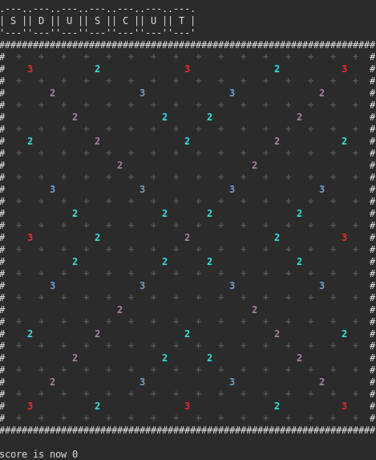
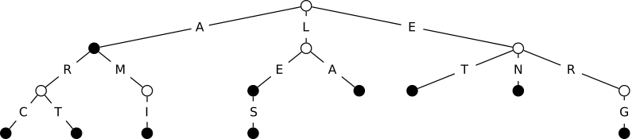

Introduction
Le but de ce projet est la programmation d'un joueur automatique au Scrabble, capable de déterminer le coup rapportant le plus de points étant donné un plateau de jeu, l'ensemble des lettres du joueur, et un dictionnaire de mots valides.

Démonstration du calcul du meilleur coup sur le plateau
Structure de Données : Le GADDAG
L'efficacité de ce projet repose sur l'implémentation de la structure de données GADDAG (Generalized Acyclic Directed Acyclic Graph). Elle permet de déterminer très rapidement, à partir d'un point de départ sur le plateau, tous les mots qui peuvent être ajoutés en passant par ce point.
Insertion et Recherche
- Insertion : L'insertion d'un mot se fait lettre par lettre. Si une arête correspondant à une lettre n'existe pas, un nouveau nœud est créé. Le nœud terminal marque la fin d'un mot valide.
- Recherche par le milieu : Le GADDAG est particulièrement adapté au Scrabble car il permet de chercher des mots en partant d'une lettre déjà présente sur le plateau, puis d'explorer dans les deux directions (horizontale et verticale).

Représentation schématique de l'arbre GADDAG
Fonctionnalités Principales
- Gestion du Sac de Lettres : Le programme gère un sac contenant les lettres et leurs valeurs en points, avec une probabilité de tirage proportionnelle à leur fréquence d'apparition.
- Main du Joueur : Gestion des 7 lettres du joueur, avec un système de recharge automatique à chaque tour depuis le sac de lettres.
- Calcul du Meilleur Coup : Le programme évalue toutes les options de jeu possibles et détermine le coup maximisant le score, en s'assurant que le mot croise les mots existants conformément aux règles.
Architecture du Projet
Le code est structuré de manière modulaire en C++ avec l'utilisation de CMake pour la compilation :
- Board : Gère l'état et l'affichage du plateau de jeu.
- Gaddag : Encapsule la logique de l'arbre de dictionnaire et les algorithmes de recherche.
- Player & Joueur : Représentent les entités jouant la partie, la gestion de leur score et de leurs lettres.
- Sac : Gère la distribution aléatoire des lettres restantes.
Compilation et Exécution
Ce projet utilise CMake et nécessite un compilateur C++ standard.
# Configuration et compilation
mkdir build
cd build
cmake ..
make
# Lancement du programme
./test_board